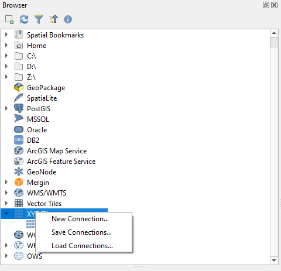
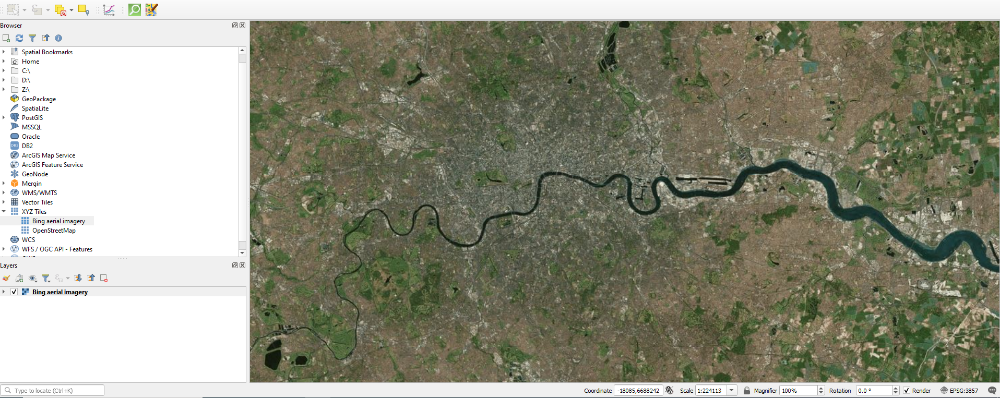
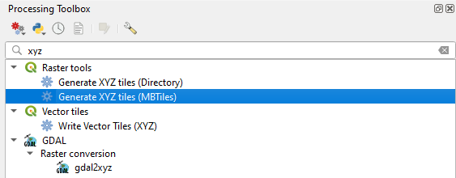

Raster tiles
Raster tiles can be large in size but an ideal format for aerial imagery.
Online services
QGIS comes by default with the OpenStreetMap online services for XYZ tiles. When adding cartographic basemap, ensure you set the tile size correctly, so that the texts and labels are readable on mobile devices with high resolution display.
You can also add other sources of XYZ tiles to your QGIS.
To add Bing aerial imagery to your QGIS:
- Open QGIS
- From the Browser panel, right-click on XYZ Tiles and select New Connection …
- A new window will appear:
- For Name type Bing aerial imagery
- For URL type http://ecn.t3.tiles.virtualearth.net/tiles/a{q}.jpeg?g=1
- Press OK

Bing aerial imagery should appear under your XYZ Tiles:
- From the Browser panel, double click on Bing aerial imagery under XYZ Tiles
- Zoom to the extent of your study area

Generating raster tiles
QGIS also offers a processing algorithm to generate your own XYZ tiles for offline use.
To generate a raster tile covering the aerial photography of your survey area:
- Add the Bing aerial imagery link added above
- Zoom to your study extent
To generate an offline copy of the aerial imagery from your map view extent:
- In QGIS, from the main menu, select Processing > Toolbox
- A new panel should appear on the right side of your QGIS
- In the search section on the top of the Processing panel, type xyz
- Under Raster, double-click on Generate XYZ tiles (MBTiles)
- A new window will appear:
- For Extent, click on the right-side drop-down menu and select Use Map Canvas Extent
- For Minimum zoom, type 10
- For Maximum zoom, type 15
- For Output file (for MBTiles), click on the right side drop-down menu and select Save to file
- Browse the folder where you want to save offline_aerial_photo.mbtiles
- Click Run

Notes:
- Depending on the size of your study area, the output file can grow significantly
- Choosing higher zoom level (in the example above, 15 was selected) can result in a very large file